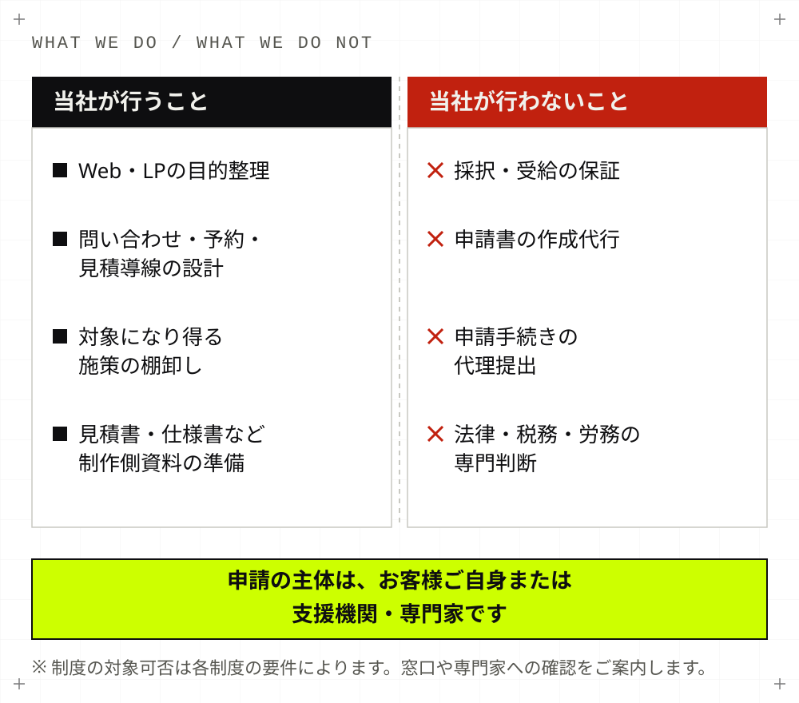
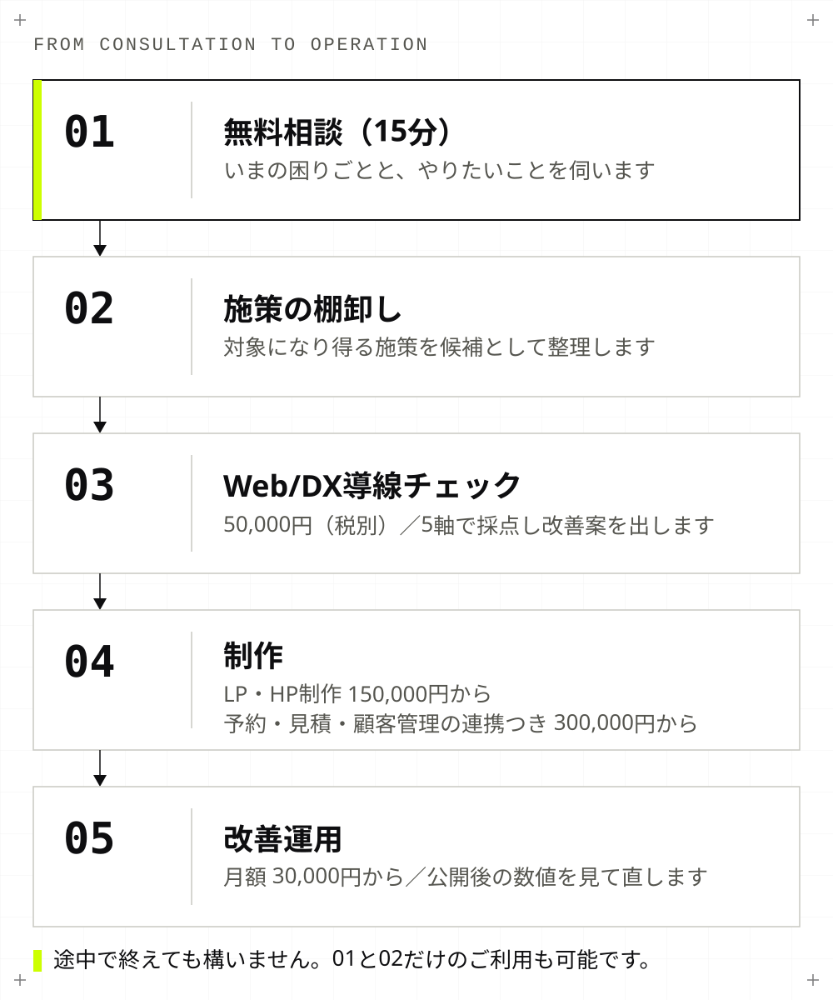

Subsidy & Web/DX
補助金をきっかけに、
Web集客と業務導線を整えませんか？
LP・ホームページ・問い合わせ導線・予約／見積／顧客管理まわりを、補助対象になり得る施策として整理します。当社は補助金の申請代行業者ではありません。制度の対象になるかどうかは各制度の要件によって決まるため、窓口や専門家への確認とあわせて進めます。
こんなところで止まっていませんか
多くの場合、止まっている理由は制度の知識よりも「何を、いくらで、どういう目的でやるのか」が言葉になっていないことです。
- 補助金が使えるのかどうか、そもそも分からない
- 何を対象経費にできるのか判断がつかない
- ホームページやLPを作っても、問い合わせにつながるか不安がある
- 申請の前に、見積や仕様を整理しておきたい
- Web制作会社と補助金の話が噛み合わない
当社の役割と、行わないこと
先にはっきりさせておきます。当社が引き受けるのはWeb・DX側だけです。申請の主体はお客様ご自身、または支援機関・専門家です。

| 領域 | 担当 |
|---|---|
| Web・LPの目的整理、導線設計 | 当社 |
| 対象になり得る施策の棚卸し | 当社（可否の判断は行いません） |
| 見積書・仕様書・納品資料の準備 | 当社 |
| 制作・公開・改善運用 | 当社 |
| 制度の選定と対象可否の確認 | お客様・窓口・専門家 |
| 申請書の作成、提出、事務局対応 | お客様・専門家 |
| 法務・税務・労務の判断 | 専門家 |
実態と異なる名義や経費での申請には、いかなる形でも協力しません。
整理できること
「ホームページを作る」ではなく、「どの業務のどこを、なぜ直すのか」まで落とします。これが結果的に、申請時の説明のしやすさにもつながります。
- Web・LP制作の目的整理：誰に何を伝え、どの行動につなげるのかを1つに決める
- 問い合わせ導線の設計：電話・LINE・フォームの役割分担と、入力項目の見直し
- 予約・見積・顧客管理の導線整理：いま手作業になっている部分の洗い出し
- 対象になり得る施策の棚卸し：やりたいことを施策単位に分け、目的と紐づける
- 見積書・仕様書・納品資料の準備：第三者が読んで内容が分かる粒度で用意する
- 制作後の改善運用：公開して終わりにせず、数値を見て直す
進め方

料金
金額はすべて税別です。制作の範囲は素材量やページ数、外部システム連携により変わるため、着手前に見積と対象作業を書面で明示します。
| プラン | 料金（税別） | 内容 |
|---|---|---|
| 無料相談 | 0円 | 15分。いまの困りごとと、やりたいことの聞き取り |
| 簡易チェック | 5,000円 | 対象ページ1点の簡易確認。気になる点を絞ってお伝えします |
| Web/DX導線チェック | 50,000円 | 5軸100点の採点、改善案、施策の棚卸し |
| LP・HP制作 | 150,000円から | 構成設計、原稿編集、実装、公開前QA、計測設定 |
| 動画・漫画LP／予約・見積・顧客管理の連携つき | 300,000円から | 上記に加えて動画・漫画制作、外部システム連携 |
| 改善運用 | 月額 30,000円から | 公開後の数値確認、改善提案、軽微な修正 |
消費税と振込手数料は別途ご負担ください。支払・キャンセル条件は特定商取引法に基づく表記に記載しています。補助金の交付を前提とした支払い条件には対応していません。採択の可否にかかわらず、ご契約いただいた作業分のお支払いが必要です。
対象になる方
- 神奈川県、鎌倉市・藤沢市周辺の小規模事業者
- リフォーム、外構、清掃、建設、店舗、地域サービス業
- LPやホームページを作りたいが、補助金の使い方が分からない事業者
- 問い合わせ・予約・見積・顧客管理の導線を整えたい事業者
対応はオンラインで完結できます。神奈川県内・東京都は訪問での相談も可能です。
よくある質問
- 補助金は必ず通りますか。
- いいえ。採択や交付決定は各制度の審査によって決まります。当社はその結果を保証しません。当社が行うのは、Web・DX側の施策を整理し、制作側の資料を準備することまでです。
- 申請代行はしてくれますか。
- 行いません。当社は申請書の作成代行や提出代行はせず、Web・DX施策の整理と制作側資料の準備を支援します。申請の主体はお客様ご自身、または商工会・自治体窓口・行政書士などの支援機関や専門家です。必要に応じて相談先をご案内します。
- IT導入支援事業者ではなくても依頼できますか。
- はい。IT導入補助金のように、登録された事業者を通す必要がある制度もあります。一方で、自治体の補助金や販路開拓を目的とした制度など、登録が前提ではないものもあります。どの制度が使えるかは要件によって変わるため、窓口での確認とあわせて進めます。
- LPだけでも対象になりますか。
- 制度によります。LP単体よりも、問い合わせ獲得、予約、見積、顧客管理、広告導線といった事業改善の目的とセットで整理したほうが、目的と経費の関係を説明しやすくなります。対象可否そのものは各制度の要件で決まります。
制度が決まっていない段階でも構いません。いまの業務のどこに手間がかかっていて、Webのどこで止まっているかを伺ったうえで、施策として整理できる範囲をお伝えします。
補助金を使える可能性があるWeb/DX施策を相談する LINEで相談